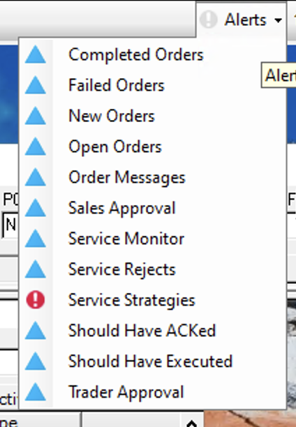
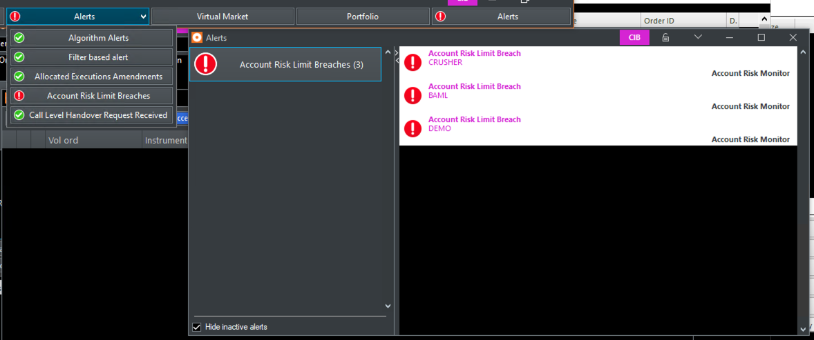
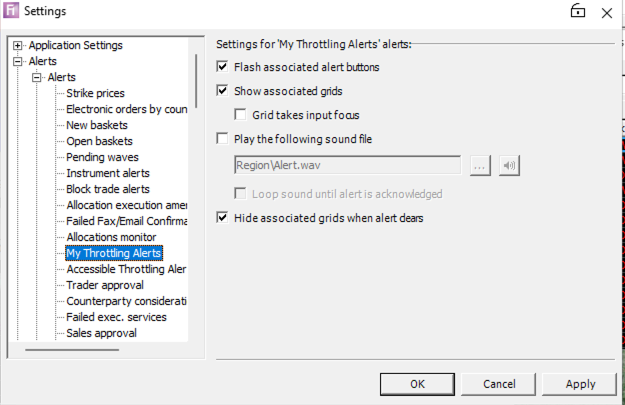
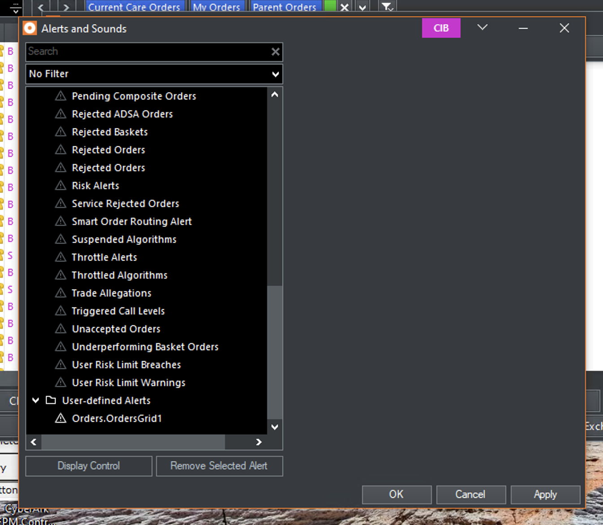

Platform
Migration.
Fidessa had an initiative to force-migrate 3 million users from its legacy Windows platform in 9 months — with 7 known disruptions planned for post-launch. I made the case for fixing them first. 5 of 7 critical blockers were resolved before launch. No notable negative feedback.
Work in Progress
The project ran 9 months, but active design work spanned roughly 5. Because the usability concerns were evident without needing test data to validate them, the timeline is harder to frame cleanly. Still figuring out how to represent this.
Part One
Project Overview
The Mission
Fidessa runs two trading platforms in parallel: a legacy system built over 30 years ago and a newer platform a decade in development. Full migration is projected to take 10 or more years, and maintaining both codebases throughout consumes development capacity that would otherwise go toward the modern platform. To accelerate the transition, Fidessa is pursuing an initiative to embed legacy tools directly into the new platform, so users can migrate without losing their existing workflows. Because the two platforms differ significantly in available tools, UI, and interaction model, the approach introduces friction that needs to be understood before moving forward.
Key Responsibilities
- Domain research and functionality mapping across both platforms
- Advocate for user needs
- Onboarding flow design for concerns that couldn't be resolved before launch
Work in Progress
Feels sparse — but there isn't more to add.
The Problem
Stated ask
Capture usability concerns introduced by running the legacy and new platforms side-by-side, and design solutions to address them before the February 2026 release.
Actual problem
The migration plan overlooked US segment users entirely. Unlike European and Asian users moving to a fully native environment, US segment users would operate in a mixed setup, with the new platform covering only ~50% of their regional workflows. The original plan was to ship with 7 known concerns unresolved and conduct usability testing post-launch. For a system serving 600+ global financial firms, disrupting live trading is a revenue risk, not a UX inconvenience.
The Solution
Deep knowledge of how these user personas think and behave enabled me to call out the consequences of each concern before needing test data to prove them. I made the case directly, with enough specificity that the PM could act on it. Development was reprioritized. 5 of 7 critical blockers were resolved before the February 2026 launch.
Original plan
Ship on the February deadline with 7 known disruptions. Conduct usability testing post-launch to build the case for resolving them.
Outcome
7 critical concerns identified. 5 resolved before launch. Shipped on time. No notable negative feedback.
Project Timeline
Domain investigation — platform comparison, concern identification
Concerns raised and advocated for users
Onboarding flow design
Dev reprioritization — 5 of 7 blockers resolved
Work in Progress
No user testing was conducted, so I can't claim user needs were validated through research. Business impact is also difficult to frame — a successful migration avoids disruption rather than generating visible ROI. The more honest framing may be operational: this work positions Fidessa to stop maintaining two separate codebases without alienating users in the process.
My Impact
Project Impact
- Surfaced and advocated to resolve risks: 7 usability concerns identified and resolved 5 before a forced migration affecting 3 million users.
- Reduced maintenance exposure: validating the embedding approach before full rollout helped Fidessa avoid committing resources to a solution users couldn't work with.
- Launch without incident: gradual rollout completed with no notable negative feedback from clients or internal teams.
Organisational Influence
- Advocacy without test data: demonstrated that deep domain knowledge can drive development reprioritization without waiting for a usability study.
- Design as risk management: reframed UX concerns as revenue risk — the language the PM needed to act.
- Transparent communication: unresolvable concerns were documented and communicated to users proactively, rather than discovered on launch day.
Part Two
Discover
Platform Comparison
Work in Progress
Considering removing this section entirely.
The first step was understanding what users were moving from — and what they were moving to. The gap between the two platforms was wider than the project brief suggested.
Work in Progress
This research was conducted — documented in writing and informed by multiple product demos. The challenge is representation: showing platform visuals creates a conflict — they reveal modernized designs that appear in two other case studies, which could undermine the narrative there. Still figuring out how to represent this without that conflict.
The 7 Concerns
By reviewing actual trader desktop setups across user segments and running a systematic platform comparison, I identified 7 usability concerns specific to the migration. Each was documented with context, user impact, and whether resolution required design changes or dev work.
01Visual Differences
Traders use desktop theming as a workflow cue. Running both platforms simultaneously creates a mixed-theme desktop with no consistent visual language.
Legacy platform

New platform
Work in Progress
Placeholder for now — a full composite screen showing the equivalent window layout on the new platform will replace this.

02Mixed Desktop Layouts
Traders organize their desktops using tabs and grouped windows. When a layout includes tools from both platforms, migration automatically breaks it apart. Screen real estate is critical for traders.
Legacy platform
After migration
Work in Progress
A skeleton screen will replace this — showing how the tabbed layout from the legacy platform becomes a stack of separate windows after migration.
Placeholder
03Triggered Alerts
Alerts on the new platform are surfaced through the Alert Manager. Type 4 alerts are the exception — because they cannot be integrated into the Alert Manager, they surface in a separate dropdown button. Users with Type 4 alerts will receive notifications from two different places.
| Alert Type | Legacy Platform | New Platform |
|---|---|---|
| Pre-defined alerts migrated from FTW | ✓ | ✓ |
| Pre-defined non-grid alerts | ✗ | ✓ |
| User-defined filter-based alerts | ✗ | ✓ |
| Pre-defined FTW-only alerts (convertible to filter-based) | ✓ | ✓ |
Work in Progress
A skeleton screen will replace these visuals.
Legacy Platform

Forced Embedding

04Alert Configuration
In the legacy platform, alerts are configured through the Settings menu. In the new platform, this is handled through the Alerts and Sounds window.
Legacy Platform

Forced Embedding
Work in Progress
Modernized design to follow.

05Loss of Right-Click Menu Options
Right-click menu options default to the European configuration, leaving US region-specific workflow options absent.
Quite empty... not sure what else to add
No screenshot available — the impact is self-evident from the description.
06No Data Transfer Between Tools
When an action in one platform triggers a tool in the other, data does not carry across between them.
Quite empty... not sure what else to add
No screenshot available — the impact is self-evident from the description.
07Legacy Tools Not Accessible via Desktop Manager
In the new platform, tools are opened through the Desktop Manager in the menu bar. The legacy platform uses its own menu bar — three dedicated items, each with a dropdown of tools. In forced embedding, legacy-only tools cannot be added to the Desktop Manager and must still be accessed through the legacy menu bar, splitting tool navigation across two separate systems.
Work in Progress
A skeleton screen will replace these visuals.
Legacy Platform
Placeholder
Forced Embedding
Placeholder
Part Four
Advocate
The Decision
The original plan was to ship with known concerns and address them post-launch. I pushed back. The concerns were more disruptive than the plan assumed, and there was no realistic dev bandwidth to fix them after launch either. The PM was presented with two options.
Option 1 — Ship as planned
Ship with the February 2026 deadline. Conduct usability testing to document the disruption and use results to make the case to stakeholders post-launch.
Option 2 — Rescope
Address the highest-impact blockers before forcing 3 million users to migrate. Delay resolves risk rather than defers it.
Making the Case
The usability consequences of each concern were clear from domain knowledge alone — no user testing required. The harder task was making the case internally and advocating for dev resources to resolve them before launch.
| # | Concern | Advocating for Users | Severity | Final Decision |
|---|---|---|---|---|
| 01 | Visual Differences | Traders use theming as a workflow cue. Mixed themes across both platforms create disorientation from day one. | Medium | Not resolvable within timeline. Addressed via onboarding. |
| 02 | Mixed Desktop Layouts | Traders are highly resistant to change — even minor UI shifts generate complaints. Automatically breaking grouped window layouts on migration will cause immediate backlash, regardless of how minor the underlying change appears. | High | Partially resolved: new platform equivalents built for the most common startup tools, but full coverage not achieved within the timeline. |
| 03 + 04 | Triggered Alerts + Alert Configuration | Migrating users are accustomed to receiving alerts in one place. Introducing a second location is disorienting and makes it easy to miss alerts — which in a trading context is a revenue risk. | High | Resolved before launch. |
| 05 | Loss of Right-Click Menu Options | Doesn't block access entirely — an alternative path exists. But traders are optimized for speed. Added steps don't just slow them down; they compound across hundreds of daily actions. | Medium–High | Resolved before launch. |
| 06 | No Data Transfer Between Tools | When an action in one platform triggers a tool in the other, the context doesn't carry over — forcing users to re-enter information mid-task and interrupting time-sensitive workflows. | High | Resolved before launch. |
| 07 | Legacy Tools Not Accessible via Desktop Manager | Users look for tools in the legacy menu bar, find nothing, and assume they're gone — only then discovering the Desktop Manager. Every session costs time until the new pattern becomes habit. | Medium | Resolved before launch. |
What happened
All 7 concerns were ranked by impact. Surfacing them early gave dev enough runway to fully resolve 5 of 7 before the February 2026 launch. The 2 remaining were not fully resolvable within the timeline and disclosed proactively to users.
Part Five
Design
Two workstreams: push for resolution where possible, set expectations where not.
Onboarding Flow
Dev resolved 5 of 7 concerns before launch. The onboarding announcement covered the rest — getting ahead of the 2 remaining issues by setting expectations before users encountered them. Content focused on transparency: what had changed, what was committed for future releases, and where to go if something felt off.
Content covered
- The mixed tool environment — why it exists and what it means for desktop organization
- New alert functionality and where alerts now surface
- Desktop navigation changes — location of legacy toolbar in the new environment
- Notice about previously grouped or tabbed tools that may no longer be contained
- Theming acknowledged transparently — original options committed for a future release
Design deliverable
Onboarding flow — first-time platform launch
Onboarding announcement
Part Six
Develop
Shipped on time. Gradual rollout. No notable negative feedback.
What Shipped
The February 2026 launch proceeded on schedule. Rollout is gradual and tied to each client firm's update cycle — not a single cutover. The onboarding flow and unified alert configuration shipped as designed. The 2 remaining concerns were disclosed proactively and committed for future releases.
Critical blockers at launch
5 of 7 identified concerns resolved before the February 2026 launch. The 2 remaining were not fully resolvable within the timeline.
Shipped on time
Gradual rollout across client firms. No notable negative feedback from clients or internal teams.
Concern 01
Theming — committed for future release, disclosed to users at launch
Post-launchConcern 02
Layout decoupling — <1% of desktop setups affected, documented and disclosed
Post-launchConcern 03 — 04
Alert types from both platforms accessible through the new platform alert area
ResolvedConcern 05
Right-click menu options restored for affected grids
ResolvedConcern 06
Data transfer fixes across interoped tools
ResolvedConcern 07
Onboarding flow — mixed environment, alert changes, desktop navigation, theming notice
ShippedPart Seven
Reflection
Advocacy is design work.
This project had no UI design deliverables for most of its duration. The work was investigation, documentation, and advocacy — figuring out what was going to break and making the case for fixing it before release. That counts.
The hardest part was holding the position against a hard deadline and team momentum to ship. Moving the PM took sustained, specific advocacy over several months — not a single escalation, but a case built and reinforced from evidence.
What worked
Domain knowledge as a substitute for test data. Framing UX risk in revenue terms. Sustained, specific advocacy over several months rather than a single moment of escalation.
Testimonials
I'm removing this section. OK?
No testimonials.